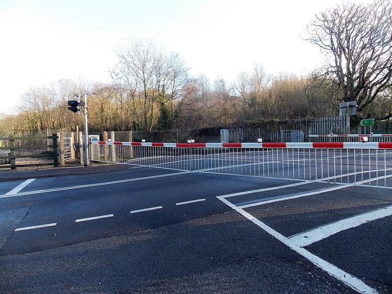

▲ 서울 이태원의 야간 횡단보도. 횡단보도 보행자 보호의무 위반은 12대 중과실 중 하나다 ⓒ AhmedAlElq, Wikimedia Commons (CC BY-SA 4.0)
"종합보험 들었으니 사고 나도 형사처벌은 없다"— 자주 듣는 말입니다. 절반은 맞습니다.
근거는 교통사고처리특례법입니다. 그런데 이 법에는 특례가 통하지 않는 예외가 있습니다.
그게 12대 중과실입니다. 여기에 걸리면 보험 가입도, 피해자와의 합의도 형사처벌을 막지 못합니다.
1. "보험 들었으니 괜찮다"가 통하는 원리
교통사고로 사람이 다치면 업무상과실치사상죄가 성립할 수 있습니다. 원래는 형사 사건입니다.
교통사고처리특례법은 여기에 예외를 뒀습니다. 종합보험(공제 포함)에 가입돼 있으면 원칙적으로 공소를 제기하지 않는다는 것입니다.
이유는 현실적입니다. 교통사고를 전부 형사 사건으로 처리하면 수사·재판 부담이 감당되지 않고, 피해자 구제도 오히려 늦어집니다. 보험으로 배상이 확실하다면 형사 절차를 생략하는 편이 낫다는 판단입니다.
그래서 일반적인 접촉사고에서 "보험 처리했으니 끝"이 실제로 성립합니다.
문제는 이 특례가 무조건 적용되는 게 아니라는 점입니다.
2. 특례가 깨지는 순간
법은 운전자의 과실이 특히 무겁다고 본 유형을 따로 정해뒀습니다. 여기에 해당하면 보험 가입 여부와 무관하게 공소가 제기됩니다.
흔한 오해가 하나 있습니다. "합의하면 되지 않나"입니다.
12대 중과실은 반의사불벌죄가 아닙니다. 피해자가 처벌을 원하지 않는다고 해도 공소 제기 자체를 막지는 못합니다. 합의는 양형(형량 결정)에서 유리하게 작용하는 요소일 뿐입니다.
적용되는 죄는 업무상과실치사상죄로, 5년 이하의 금고 또는 2,000만 원 이하의 벌금입니다.
금고형이라는 점에 주목할 필요가 있습니다. 벌금으로 끝나지 않고 신체의 자유를 제한하는 형이 선고될 수 있다는 뜻입니다.

▲ 12대 중과실 사고는 보험 처리 여부와 별개로 형사 절차가 진행된다
3. 12가지 목록
항목을 그대로 정리하면 다음과 같습니다.
| # | 항목 | 흔한 상황 |
|---|---|---|
| 1 | 신호·지시 위반 | 황색 신호에 그대로 진입 |
| 2 | 중앙선 침범 | 추월하려 반대 차로 진입 / 고속도로 횡단·유턴·후진 |
| 3 | 제한속도 20km/h 초과 | 단속 카메라만 피하면 된다는 오해 |
| 4 | 앞지르기 방법·금지시기·금지장소 위반, 끼어들기 | 터널·교량에서 추월 |
| 5 | 철길건널목 통과방법 위반 | 차단기 내려오는데 진입 |
| 6 | 횡단보도 보행자 보호의무 위반 | 보행자가 있는데 서행 통과 |
| 7 | 무면허 운전 | 정지·취소 기간 중 운전 |
| 8 | 음주·약물 운전 | 기준치 미만이어도 사고 시 쟁점 |
| 9 | 보도 침범 / 보도 횡단방법 위반 | 인도를 가로질러 주차장 진입 |
| 10 | 승객 추락 방지의무 위반 | 문이 열린 채 출발 |
| 11 | 어린이보호구역 안전운전의무 위반 | 스쿨존에서 어린이가 다친 경우 |
| 12 | 화물 고정조치 위반 | 적재물 낙하로 인한 사고 |

▲ 차단기가 내려온 철길건널목. 5번 항목인 건널목 통과방법 위반은 발생 빈도는 낮지만 결과가 치명적이다(영국 사례) ⓒ Jaggery, Wikimedia Commons (CC BY-SA 2.0)
12번 화물 고정조치 위반은 비교적 최근에 추가된 항목입니다. 고속도로 낙하물 사고가 반복되면서 들어왔습니다.
3번 속도위반도 눈여겨볼 만합니다. 20km/h 초과라는 기준이 생각보다 낮습니다. 제한속도 50km/h 구간에서 71km/h로 달리다 사고가 나면 여기에 해당합니다.
4. 12대에 없어도 처벌되는 경우
12대 중과실 목록에 없더라도 특례가 배제되는 사유가 따로 있습니다. 이쪽이 오히려 더 무겁습니다.
- 사망사고 — 피해자가 사망하면 12대 중과실 여부와 무관하게 형사 절차가 진행된다
- 중상해 — 헌법재판소는 2009년, 종합보험에 가입했다는 이유로 중상해 사고까지 공소를 제기할 수 없게 한 조항을 위헌으로 결정했다. 이후 중상해 사고도 특례에서 빠졌다.
- 도주(뺑소니) — 구호 조치 없이 현장을 이탈한 경우
- 음주측정 거부 — 측정에 응하지 않은 것 자체가 별도 처벌 대상
- 보험에 실제로 가입돼 있지 않거나 보상이 제한되는 경우
특히 뺑소니는 사고 자체보다 이탈이 더 큰 문제가 됩니다. 접촉 사실을 몰랐다고 주장해도, 블랙박스와 CCTV로 인지 가능성이 판단됩니다.
사고 직후 무엇을 먼저 해야 하는지는 별도로 정리해둔 기사가 있습니다.

▲ 사고 직후 구호 조치와 안전 확보를 하지 않고 이탈하면 도주로 판단될 수 있다
5. 실무에서 가장 자주 걸리는 항목
12가지 중에서도 일상 주행에서 실제로 문제가 되는 항목은 몇 개에 몰려 있습니다.
첫째는 6번, 횡단보도 보행자 보호의무 위반입니다. 보행자가 횡단보도를 건너고 있거나 건너려 할 때 일시정지 의무가 발생합니다. "천천히 지나갔다"는 위반입니다.
둘째는 1번, 신호위반입니다. 쟁점은 대부분 황색 신호입니다. 황색은 "빨리 지나가라"가 아니라 정지선 앞에서 멈추라는 신호입니다. 이미 진입해 멈출 수 없는 경우에만 통과가 인정됩니다.
셋째는 2번, 중앙선 침범입니다. 추월뿐 아니라 불법 유턴, 주차된 차를 피하려는 진입도 포함됩니다.
넷째는 11번, 어린이보호구역입니다. 이 구역은 속도위반이 아니어도 안전운전의무 위반으로 걸릴 수 있습니다. 어린이가 다치면 적용됩니다.

▲ 어린이보호구역은 속도위반이 아니어도 안전운전의무 위반으로 12대 중과실에 걸릴 수 있다
공통점이 보입니다. 네 항목 모두 "잠깐의 편의"에서 시작합니다. 그리고 그 순간이 민사와 형사를 가릅니다.

▲ 음주운전은 12대 중과실이자, 측정 거부는 별도의 처벌 대상이 된다 ⓒ 세계일보
6. 정리
교통사고처리특례법은 종합보험에 가입돼 있으면 원칙적으로 공소를 제기하지 않도록 하고 있습니다. 일반적인 접촉사고에서 "보험으로 끝"이 성립하는 이유입니다.
12대 중과실에 해당하면 이 특례가 배제됩니다. 보험 가입도 피해자와의 합의도 공소 제기 자체를 막지 못하고, 합의는 양형에만 반영됩니다.
사망사고, 뺑소니, 음주측정 거부는 12대 목록과 별개로 특례가 배제됩니다. 적용 죄명은 업무상과실치사상죄로 5년 이하 금고 또는 2,000만 원 이하 벌금입니다.